How do we know it's about to rain — and where exactly?
40 min · Data & ML · OpenWeather
00 · Motivation
The storms that matter are invisible to NWP
A single-cell storm is a few kilometres wide and lives under an hour. On a global model grid it simply doesn't exist — yet these are the storms that bring hail, downbursts and flash floods.
Convective scales: single cells ~2–10 km across, 30–60 min lifetime; even a supercell's damaging core (hail shaft, mesocyclone) stays km-scale.
NWP scales: global models run at Δx ≈ 10–25 km, and a feature needs ~5–7 grid lengths to survive — anything under ~50 km gets averaged away. Km-scale regional models help, but trigger convection in the wrong place at the wrong time.
The mismatch is the damage: hail, downbursts, flash floods, tornadoes — most short-fuse warnings live exactly at the scales the grid can't hold.
Comment: coarsen the grid — an 80 mm/h core melts into drizzle. That's why the first hours belong to observations, not physics.
What the model grid sees — same storm, averaged onto Δ-km boxes
16 km
01 · The gap
Nowcasting fills the gap NWP can't
The first hours are where classical weather models are weakest — they need time to spin up, and their grids are too coarse for individual storms. Nowcasting starts from what the sky is doing right now.
0–6 h, observation-driven. Extrapolate what radar and satellite see at this minute.
NWP is weak at the left edge: assimilation spin-up, coarse grids, parameterized convection.
Operations blend both — the crossover sits around 2–6 h.
Comment: drag the lead time — near t=0 observations win; past a few hours physics takes over. Nowcasting owns the left edge.
Skill vs lead time — where each method wins (illustrative)
+1.0 h
02 · Why it's hard
Two error sources, and skill that melts in minutes
A nowcast can be wrong about the state now, and wrong about how it evolves. How fast skill decays depends on what kind of rain you're looking at.
Error 1 — the analysis. Radar artifacts, satellite indirectness, gaps between sensors.
Error 2 — the evolution. Growth, decay and initiation are barely predictable at small scales.
Predictability rides on size: a single cell (~5 km) lives ~30 min; a frontal band (~1000 km) persists for a day. The small, violent stuff dies fastest.
Comment: the bigger the pattern, the longer it lives — and radar data confirms it (right, measured lifetimes vs scale).
Small lives short: size of a rain pattern vs how long it survives
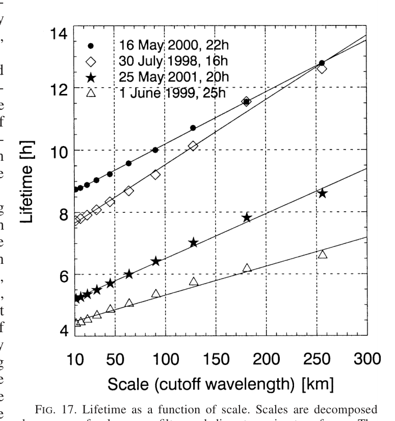
The measured version: lifetime of radar-echo patterns grows with spatial scale · Germann & Zawadzki, MWR 2002
03 · Detection — radar
Radar — sharp, direct-ish, and patchy
Radar sees precipitation-sized drops at kilometre resolution every few minutes — the backbone of nowcasting. But reflectivity is not rain rate, beams misbehave, and coverage has holes.
dBZ is a log scale: every +10 dBZ ≈ ×4 the rain rate (Z = 200·R1.6)
35 dBZ
Synthetic radar composite — artifacts & coverage
Comment: radar is the sharpest source we have — where it exists, and when the beam behaves. Composites: MRMS (US), OPERA (EU).
04 · Products
Composites are the product — MRMS & OPERA
Nobody consumes a single radar. Operational products fuse hundreds of them into one map — and that map ends exactly where the radars end.
MRMS (NOAA): ~180 US + Canada radars fused with gauges, NWP and lightning → 1 km / 2 min, free and open. The de-facto training and verification target for DL nowcasting (MetNet, NowcastNet, DGMR-US).
OPERA (EUMETNET): ~200 radars from 30+ countries in one pan-European composite, 2 km / 15 min, harmonized via the ODIM standard — as much diplomacy as physics. EURADCLIM adds gauge adjustment on top.
Every serious met service has one:RADOLAN (Germany, 1 km/5 min, gauge-adjusted), UKPP (UK Met Office), CombiPrecip (Switzerland), JMA HRPN (Japan — down to 250 m/5 min), Rainfields (Australia), SWAN (China). Same recipe everywhere: mosaic → QC → gauge adjustment.
Coverage follows wealth: North America, Europe, East Asia — and hard nothing over oceans, most of Africa and South America. There is no global radar composite; the closest thing is satellite (IMERG / GSMaP). Saltikoff et al., BAMS 2019
Comment: middle panel — a year of radar rain over Europe; the sharp outer edge is not climate, it's where the radars stop.
Two flagship composites — and the global reality
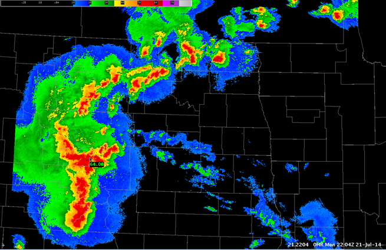
MRMS composite — MCS over the US Midwest · NOAA (public domain)
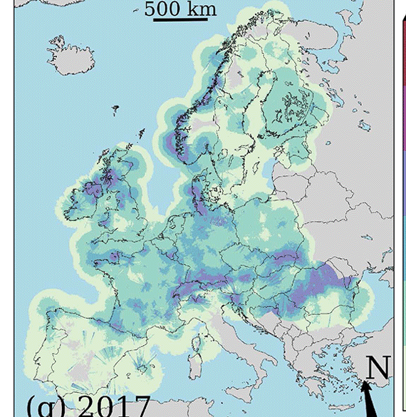
A year of OPERA radar rain (EURADCLIM, 2017) · Overeem et al. 2023 (CC-BY)
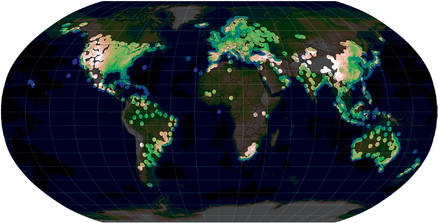
Where the world has weather radar — and where it doesn't · Saltikoff et al., BAMS 2019
05 · Detection — satellites & gauges
Satellites & gauges — global, but indirect
Where there is no radar — most of the planet — nowcasting leans on satellites and gauges. Each source trades coverage against directness.
Radar (previous slides): sharp and frequent — but only inside its ~200-km circles. This is the reference the other sources fill in around.
Geostationary (GOES, MSG/SEVIRI): every 5–15 min, whole disc — but it sees cloud tops, not rain.
Polar orbiters (GPM core + constellation, merged into IMERG): calibrated precipitation, revisit measured in hours.
Gauges: the point truth — accurate, sparse, uneven.
Comment: toggle the layers — no single source is complete; operational nowcasting is a fusion problem, and most of the world has no radar at all.
One storm, four views (synthetic)
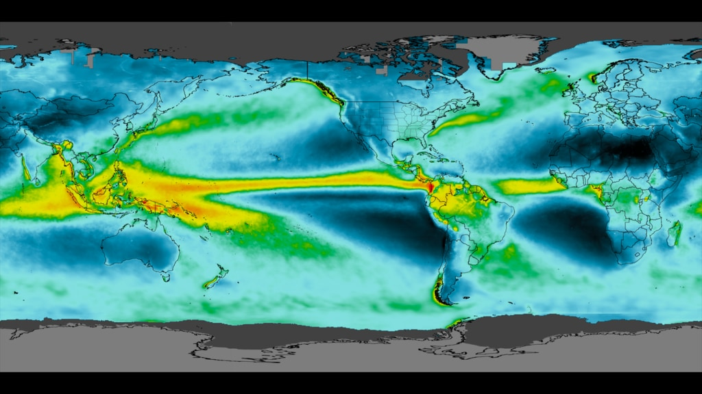
Satellite detection at planetary scale: IMERG mean precipitation, 2001–2019 · NASA SVS (public domain)
06 · Stitching
One seamless map — stitching radars and satellites
Radar coverage is a set of circles, not a map. In practice you mosaic the radars, reconstruct radar-like precipitation from satellite imagery everywhere else — and then hide the seams. Yandex Meteum, Habr 2020
Mosaic first: each radar sees ~200–250 km; between the circles there is simply no data (see the Russia/Belarus coverage map).
Satellite fills the gaps: a neural net turns geostationary imagery into radar-like precipitation fields, extending the nowcast beyond radar range.
Hide the seams: alpha-blending plus a U-Net inpainting model (NVIDIA partial convolutions) redraws the radar–satellite transition zone — the tell-tale semicircles vanish.
Comment: middle vs right — same moment, with and without neural stitching. Users never see where the radar ends.
STEPS: keep predictable scales, replace the rest with correlated noise, run 20+ members.
honest probabilities
detail is noise, still no initiation
4 · Neural nets
Learn evolution from data
Millions of radar sequences teach growth, decay — and initiation. Generative models keep it sharp.
learns what physics we can't run
data-hungry; blurs unless generative
Comment: production systems chain these — Yandex went optical flow → neural net; pySTEPS blends ensemble with NWP; Google went straight to neural. More capability costs more machinery, left to right.
08 · Optical flow
Optical flow — the classical workhorse
Estimate a motion field from the last few radar frames, then advect the newest frame along it. In pySTEPS that's Lucas–Kanade or VET; Yandex ran a tuned Dense Inverse Search in production — for a while it even beat their first neural net.
Motion estimation is a solved commodity: Lucas–Kanade, VET, DARTS ship in pySTEPS; Yandex used DIS — cheap enough to rerun every radar update.
Then just advect: slide the latest field along the motion vectors (semi-Lagrangian scheme keeps it stable at long steps).
Strong at +10 min, fading after: it only moves what already exists — no growth, no decay, no initiation.
Comment: left — a real motion field over Finnish radar. Right — drag the lead time: the forecast tracks truth early, then reality grows away from it.
Real motion field & extrapolation in action
+20 min
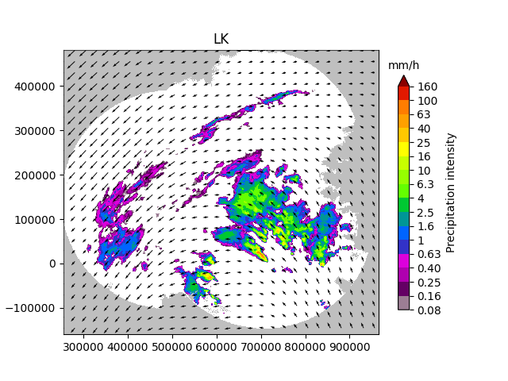
Lucas–Kanade motion field over FMI radar · pySTEPS gallery (BSD)
Extrapolation demo — grey contour = truth (synthetic)
09 · STEPS / PySTEPS
PySTEPS — the open-source production baseline
STEPS in practice: split the field into a scale cascade, keep what persists, replace the dying small scales with stochastic noise, run it 20+ times — an ensemble in minutes on a CPU. Operational at FMI, MeteoSwiss and others; the baseline every DL paper must beat. Pulkkinen et al., GMD 2019
Left — the real thing: an FMI radar composite decomposed into its cascade levels (this is what the algorithm actually sees).
Stochastic + motion perturbations → ensemble members; blend toward NWP as lead grows.
In practice you tune: number of cascade levels, noise generator, motion perturbation amplitude — and it runs anywhere, for free.
Comment: slide the lead time — detail dissolves into seeded noise and the 20% probability contour widens. Session 3's ensemble story, at nowcast scale.
Real cascade decomposition & a stochastic member (right: synthetic)
Persisted large scales + stochastic detail (synthetic)
10 · The limit
What extrapolation can never do
Advection moves rain that already exists. It cannot grow it, decay it, or start a new storm — and convective initiation is exactly what matters for warnings.
No growth or decay along the trajectory — intensity is frozen.
Convective initiation: a cell born after t=0 is invisible to extrapolation.
Motion errors compound with lead time.
Comment: press play — truth grows a brand-new cell; the extrapolation never will. This gap is what deep learning targets.
The cell it can't see (synthetic sequence)
t = 0 min
Truth — a new cell initiates
Extrapolation — moves what it saw at t=0
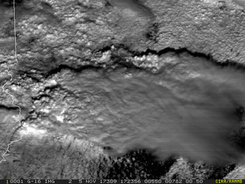
The real thing: GOES-16 watches a supercell explode in under an hour — Indiana, Nov 2017 · NOAA/CIRA (public domain)
11 · Deep learning
Neural nets — predict the next frames of the video
The general idea is embarrassingly simple: radar is a movie. Feed the network the last few frames, ask it for the next ones. Trained on years of archives, it learns growth, decay and initiation — everything extrapolation can't do — with no physics equations involved.
Input → output: the last ~4–6 radar frames (plus satellite, orography, NWP if you have them) in; the frames for +10…+120 min out.
Training: decades of radar archives sliced into millions of "past → future" pairs. The network recognizes a situation and replays what historically followed it.
That's how it learns initiation: it has seen thousands of storms born out of clear air in this synoptic setup — extrapolation has seen only the current frame.
Architectures came and went — ConvLSTM (2015) → U-Nets → transformers → MetNet in production at Google — but the framing stayed: video in, video out. What matters most is the loss function — the next slide.
Reality check (Yandex): their first neural net beat a heavily-tuned optical flow by +7.6% F1 over 2 h. Habr 2020
One network, one mapping: past frames in → future frames out
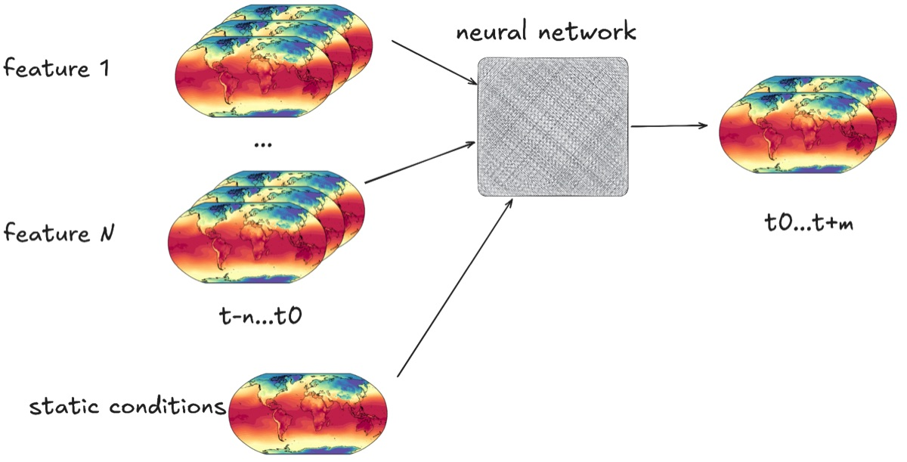
Stacked input frames (t−n…t0) + static conditions → network → the next frames. For nowcasting the "features" are radar & satellite fields. · Session 3 deck
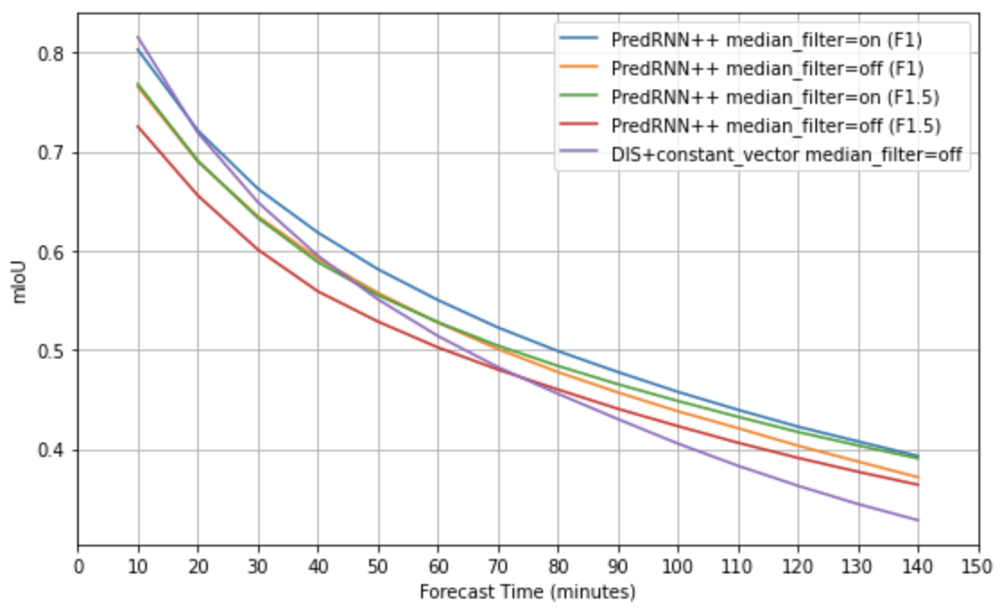
The evidence: optical flow wins the first frame, the network wins the rest (IoU vs lead time) · Yandex, Habr 2020
12 · The crux
The blurring problem
Train a network on pixel-wise MSE and the safest prediction is the average of all plausible futures — a blur. It's what the loss rewards, not a tuning bug — and it erases exactly the heavy rain you care about.
MSE → conditional mean → smooth fields at long lead times.
Deterministic DL beats extrapolation on average scores while failing on extremes.
Comment: drag the lead time — only the middle panel blurs. The observation stays sharp; a generative sample stays sharp too.
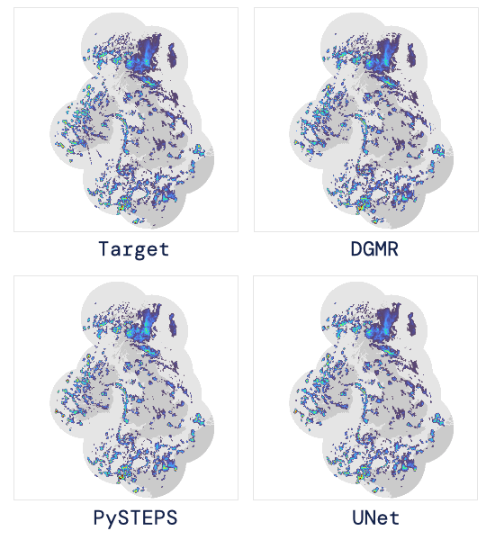
The real thing, animated: radar truth vs DGMR vs blurry UNet · DeepMind blog
Same event, three forecasts (synthetic)
+45 min
Observation
Deterministic DL (MSE-trained)
Generative sample
13 · Generative
Model the distribution, not the mean
The fix for blurring: stop asking the network for the future — there are many plausible ones. A generative model draws samples: each one sharp, each one a possible movie ending. You choose how to use the set.
Deterministic net = one answer — the average of futures, i.e. the previous slide's blur.
Generative net = many answers. Each sample sharp and plausible; they disagree where the future is uncertain.
You aggregate, not the loss: mean of samples = the same blur (tab 2); exceedance odds (tab 3) keep the storm.
DGMR (GAN, 2021): ranked #1 in 89% of cases by a panel of 56 Met Office meteorologists (vs pySTEPS & U-Net). Diffusion (PreDiff, LDCast) — same idea, better-calibrated uncertainty. Ravuri et al., Nature 2021
Comment: walk the tabs left to right — the blur is what averaging does, not what the network must output.
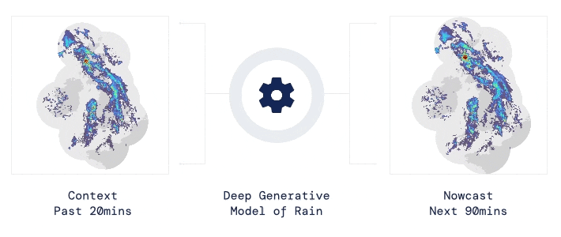
DGMR: 20 min of radar in → 90 min of sharp probabilistic rain out · DeepMind blog
Same forecast, three ways to read the samples (synthetic)
8
14 · In production
What a production nowcast looks like
Yandex Meteum: one neural net predicts the whole 2-hour rain movie in 10-minute steps — and a million daily user reports keep the map honest in real time. Habr 2020–2025
The pipeline, not the architecture, is the product: stitch radars + satellite into one map (slide 06), let the network roll it 2 h forward, correct it live, ship it every 10 minutes.
Users are the densest sensor: 1M+ "is it raining?" taps a day, vs ~8k weather-station obs — used both as a training target and for live correction: up to +20% on sudden rain. Habr 2021
Latency is a feature: the whole loop — ingest, stitch, forecast, publish — must fit inside one radar update (~10 min), or the nowcast is stale on arrival.
Comment: right — real reports flowing in across a country (animated). Density follows people, not weather: cities shout, forests are silent — which is exactly why it complements radar.
The production loop — from sensors to the map on your phone
Radarssharp · every 10 min
Satelliteseverywhere · indirect
User reports1M+/day · "is it raining?"
→
One seamless mapmosaic + neural stitching
→
Neural netnext 2 h · 10-min steps
→
Live correctionfresh reports nudge the map
App / API"rain in 20 min"
The crowd as a sensor network: user reports streaming in · Yandex, Habr 2021
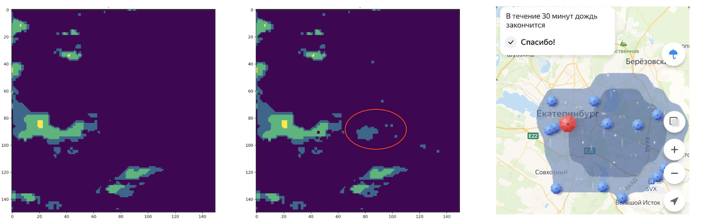
Without vs with user reports — the storm is caught only with them (Ekaterinburg) · Habr 2021
15 · Extremes
Extreme events — the acid test
Rain rates are heavy-tailed: most wet pixels are drizzle, all the damage sits in the top percent. Any model trained on average error amputates exactly that tail. Zhang et al., Nature 2023
The tail is the product. ≥30 mm/h pixels are rare, but they carry a disproportionate share of accumulated rain — and nearly all warnings.
Averaging amputates the tail: a blurred or MSE-trained forecast keeps the drizzle statistics and loses the extremes → systematic under-warning.
NowcastNet (physics evolution + generative decoder) was preferred by forecasters in 71% of extreme cases; operations still accept a deliberate wet bias.
100 rainy pixels — what radar sees vs what a blurred forecast keeps
A real extreme event — 3-h nowcasts vs what happened
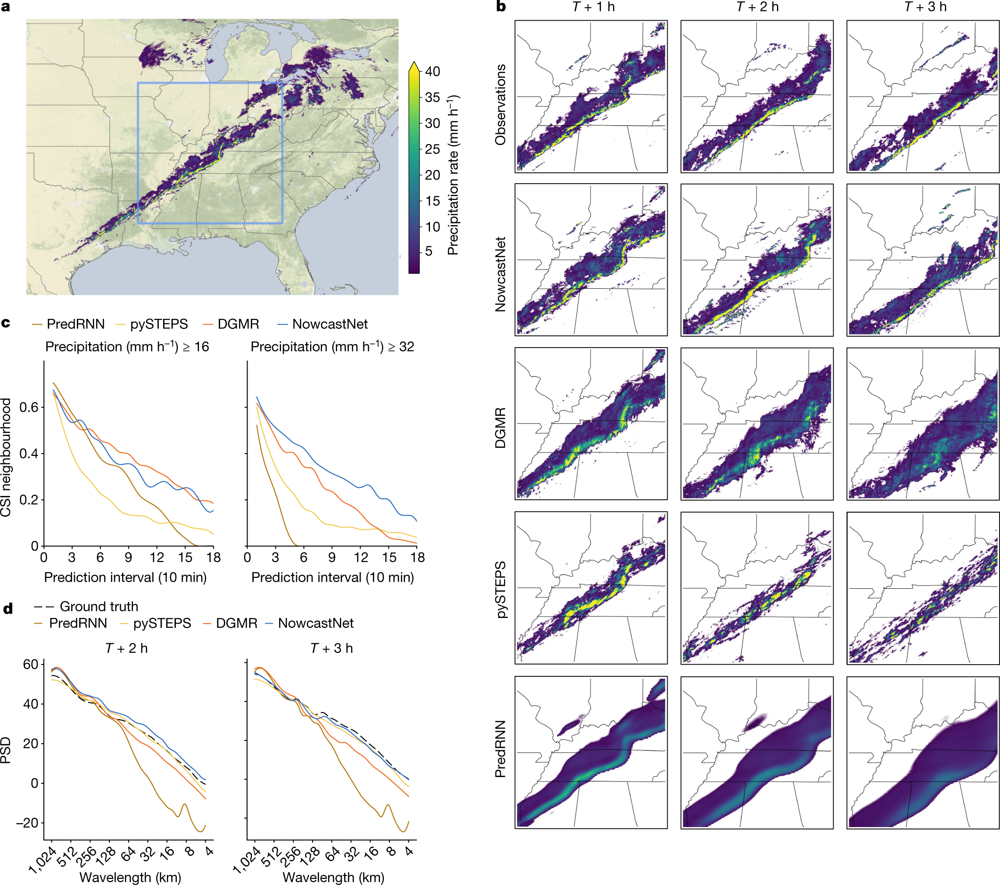
Squall line, central US, 11 Dec 2021 — truth vs NowcastNet vs DGMR vs PySTEPS: only the physics+generative model keeps the sharp line · Zhang et al., Nature 2023 (CC-BY)
16 · Verification
Grid-point scores reward the blur
Shift a perfect forecast 20 km and pixel scores punish it twice — a miss where the rain was, a false alarm where it wasn't. That double penalty is why blurry forecasts win CSI, and why we verify at neighborhood scale. Roberts & Lean, MWR 2008
Hits & misses (POD, FAR, CSI/IoU): count pixels where forecast and truth agree — brutal on any displacement. CSI is the same formula CV people call IoU — overlap over union (that's the metric in the Yandex plots).
Neighborhood (FSS): compare rain fractions in n×n windows — forgives small shifts, so sharp-but-offset forecasts get credit.
Probabilistic (CRPS): score the whole predicted distribution against what fell — the natural score for ensembles and generative models.
Comment: walk the three tabs; each has its own toy. The ƒ button shows the formula behind the active one.
One toy per metric — drag the forecast blob in tabs 1 & 2
6 px
17 · State of the art
2025 — a good nowcast where there is no radar
Global MetNet: satellite-only, probabilistic, 12-hour precipitation nowcasts at ~5 km resolution, live in Google Search — built precisely for the radar-sparse regions that dominate the globe. Agrawal et al., 2025
Inputs: geostationary satellites + GPM spaceborne-radar training target + global NWP — no ground radar required.
The skill map says it all (right): HRES is pale everywhere; Global MetNet lights up Africa, South America, South-East Asia — better skill there than top NWP achieves in the US.
Case study below: a convective system in West Africa — the world's best physics model (HRES) has virtually no skill; the satellite-first nowcast tracks the storm for 7 hours.
The frontier isn't a better radar nowcast — it's a good nowcast everywhere. OpenWeather's gap exactly.
Comment: forecasts in under a minute, ~5 km / 15 min, already serving Google Search. Click the images to zoom.
From the paper: skill where there was none
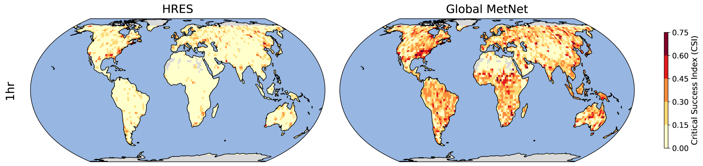
CSI at +1 h, 1 mm/h: ECMWF HRES (left) vs Global MetNet (right) — the Global South switches on · Agrawal et al. 2025, Fig. 1
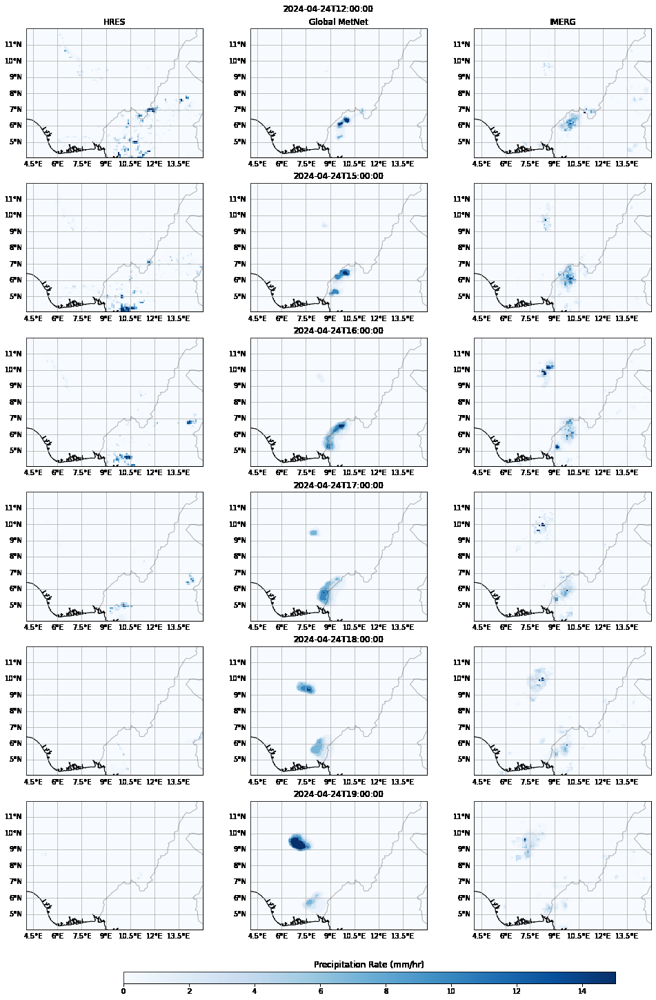
Deep convection over West Africa, 24 Apr 2024 — HRES (left) misses the storm entirely; Global MetNet (middle) tracks what IMERG observed (right) · Agrawal et al. 2025, Fig. 9
~5 km / 15 min · 12 h aheadforecast in <1 minlive in Google Search
18 · Recap
Three things to remember
The whole talk in three ideas — each with a live reminder.
1
Move it, then grow it
Extrapolation moves rain; learning the evolution — growth, decay, initiation — is the hard half.
2
Blurring is the enemy
Pixel losses average the futures into a smear. Generative and physics-informed models restore the sharpness extremes demand.
3
Verify like a probabilist
Neighborhood (FSS), probabilistic (CRPS), texture and human eval — grid-point scores alone reward the blur.
19 · References
References & further reading
Where these ideas come from — the foundational papers and the operational systems.